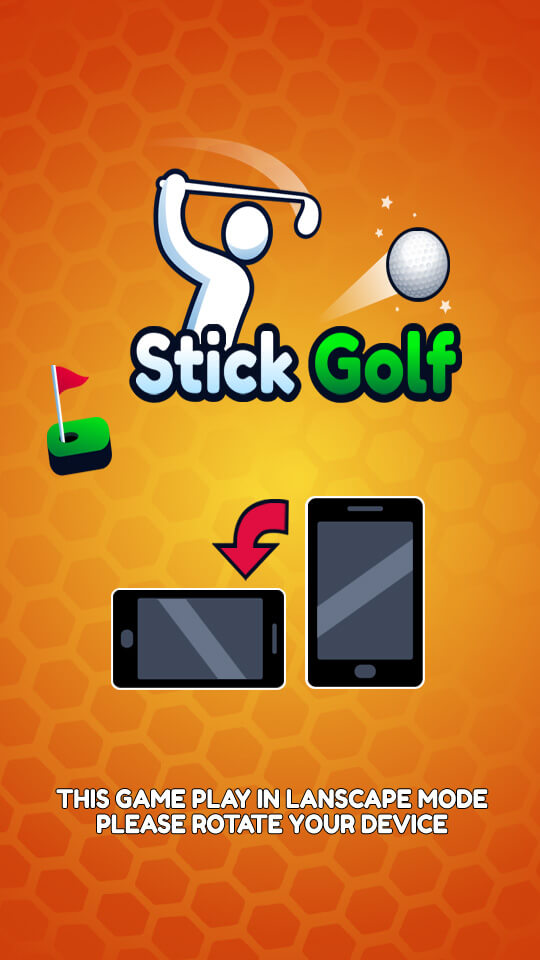

Stickman Golf is a physics-based golf game developed by Stick & Rolf, released in 2010 for Microsoft Windows.
This unique game combines the classic golf experience with stick figure characters and wacky humor. Players control their stickman avatar as they try to navigate through various courses while avoiding obstacles and collecting points.
Basic Controls:
The objective of the game is to complete each hole in the minimum time allowed while achieving a score of 100 points or less. Each hole consists of three holes: approach (par), fairway, and green.
The game features various courses set in unique locations, including forests, deserts, and even a futuristic city. Players must navigate their stickman through each hole while avoiding obstacles such as rocks, trees, and wildlife.
Stickman Golf offers a fun and challenging golfing experience that is easy to learn but difficult to master. With its simple yet addictive gameplay, this game appeals to players of all ages and skill levels.
The game's unique graphics and wacky humor add a touch of whimsy and charm, making it a standout title in the golf genre. Additionally, the game's replay value is high due to its procedurally generated courses and adjustable difficulty settings.
In addition to solo mode, players can compete against friends or other players online for high scores and bragging rights.
The game features achievements and leaderboards that track players' progress and rankings. Completing holes in the minimum time allowed can earn players badges and rewards.